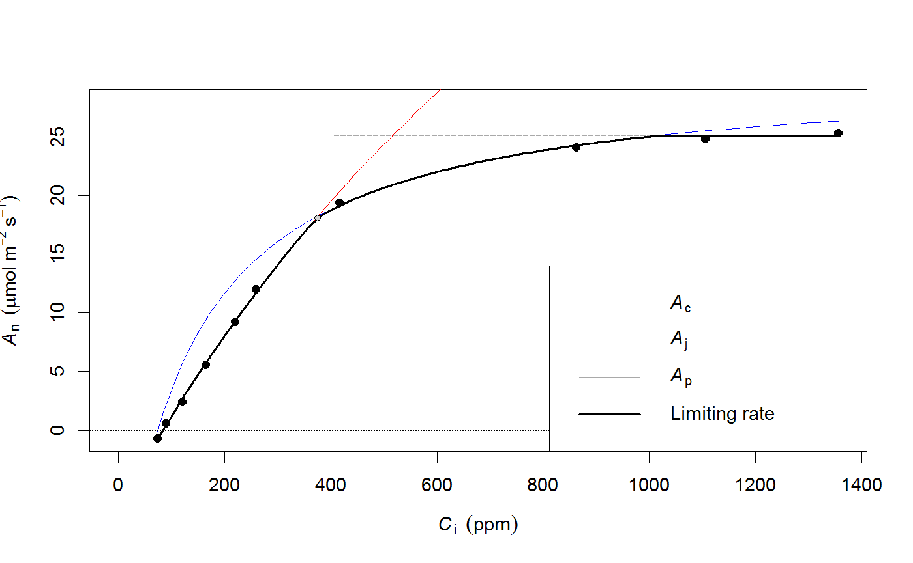

<!-- Generated by pkgdown: do not edit by hand -->
<!DOCTYPE html>
<html>
  <head>
  <meta charset="utf-8">
<meta http-equiv="X-UA-Compatible" content="IE=edge">
<meta name="viewport" content="width=device-width, initial-scale=1.0">

<title>Fit the Farquhar-Berry-von Caemmerer model of leaf photosynthesis — fitaci • plantecophys</title>

<!-- jquery -->
<script src="https://code.jquery.com/jquery-3.1.0.min.js" integrity="sha384-nrOSfDHtoPMzJHjVTdCopGqIqeYETSXhZDFyniQ8ZHcVy08QesyHcnOUpMpqnmWq" crossorigin="anonymous"></script>
<!-- Bootstrap -->
<link href="https://maxcdn.bootstrapcdn.com/bootswatch/3.3.7/cosmo/bootstrap.min.css" rel="stylesheet" crossorigin="anonymous">

<script src="https://maxcdn.bootstrapcdn.com/bootstrap/3.3.7/js/bootstrap.min.js" integrity="sha384-Tc5IQib027qvyjSMfHjOMaLkfuWVxZxUPnCJA7l2mCWNIpG9mGCD8wGNIcPD7Txa" crossorigin="anonymous"></script>

<!-- Font Awesome icons -->
<link href="https://maxcdn.bootstrapcdn.com/font-awesome/4.6.3/css/font-awesome.min.css" rel="stylesheet" integrity="sha384-T8Gy5hrqNKT+hzMclPo118YTQO6cYprQmhrYwIiQ/3axmI1hQomh7Ud2hPOy8SP1" crossorigin="anonymous">


<!-- pkgdown -->
<link href="../pkgdown.css" rel="stylesheet">
<script src="../jquery.sticky-kit.min.js"></script>
<script src="../pkgdown.js"></script>
  
  
<!-- mathjax -->
<script src='https://mathjax.rstudio.com/latest/MathJax.js?config=TeX-AMS-MML_HTMLorMML'></script>

<!--[if lt IE 9]>
<script src="https://oss.maxcdn.com/html5shiv/3.7.3/html5shiv.min.js"></script>
<script src="https://oss.maxcdn.com/respond/1.4.2/respond.min.js"></script>
<![endif]-->


  </head>

  <body>
    <div class="container template-reference-topic">
      <header>
      <div class="navbar navbar-default navbar-fixed-top" role="navigation">
  <div class="container">
    <div class="navbar-header">
      <button type="button" class="navbar-toggle collapsed" data-toggle="collapse" data-target="#navbar">
        <span class="icon-bar"></span>
        <span class="icon-bar"></span>
        <span class="icon-bar"></span>
      </button>
      <a class="navbar-brand" href="../index.html">plantecophys</a>
    </div>
    <div id="navbar" class="navbar-collapse collapse">
      <ul class="nav navbar-nav">
        <li>
  <a href="..//index.html">
    <span class="fa fa-home fa-lg"></span>
     
  </a>
</li>
<li>
  <a href="../reference/index.html">Reference</a>
</li>
<li class="dropdown">
  <a href="#" class="dropdown-toggle" data-toggle="dropdown" role="button" aria-expanded="false">
    Articles
     
    <span class="caret"></span>
  </a>
  <ul class="dropdown-menu" role="menu">
    <li>
      <a href="../articles/fitaci-FAQ.html">Fitting A-Ci curves - FAQ</a>
    </li>
    <li>
      <a href="../articles/Introduction_to_fitaci.html">Introduction to fitaci</a>
    </li>
  </ul>
</li>
      </ul>
      
      <ul class="nav navbar-nav navbar-right">
        
      </ul>
    </div><!--/.nav-collapse -->
  </div><!--/.container -->
</div><!--/.navbar -->

      
      </header>

      <div class="row">
  <div class="col-md-9 contents">
    <div class="page-header">
    <h1>Fit the Farquhar-Berry-von Caemmerer model of leaf photosynthesis</h1>
    </div>

    
    <p>Fits the Farquhar-Berry-von Caemmerer model of photosynthesis to measurements of photosynthesis and intercellular \(CO_2\) concentration (Ci). Estimates Jmax, Vcmax, Rd and their standard errors. A simple plotting method is also included, as well as the function <code><a href='fitacis.html'>fitacis</a></code> which quickly fits multiple A-Ci curves (see its help page). Temperature dependencies of the parameters are taken into account following Medlyn et al. (2002), see <code><a href='Photosyn.html'>Photosyn</a></code> for more details.</p>
    

    <pre class="usage"><span class='fu'>fitaci</span>(<span class='no'>data</span>, <span class='kw'>varnames</span> <span class='kw'>=</span> <span class='fu'>list</span>(<span class='kw'>ALEAF</span> <span class='kw'>=</span> <span class='st'>"Photo"</span>, <span class='kw'>Tleaf</span> <span class='kw'>=</span> <span class='st'>"Tleaf"</span>, <span class='kw'>Ci</span> <span class='kw'>=</span> <span class='st'>"Ci"</span>, <span class='kw'>PPFD</span>
  <span class='kw'>=</span> <span class='st'>"PARi"</span>, <span class='kw'>Rd</span> <span class='kw'>=</span> <span class='st'>"Rd"</span>), <span class='kw'>Tcorrect</span> <span class='kw'>=</span> <span class='fl'>TRUE</span>, <span class='kw'>Patm</span> <span class='kw'>=</span> <span class='fl'>100</span>, <span class='kw'>citransition</span> <span class='kw'>=</span> <span class='kw'>NULL</span>,
  <span class='kw'>quiet</span> <span class='kw'>=</span> <span class='fl'>FALSE</span>, <span class='kw'>startValgrid</span> <span class='kw'>=</span> <span class='fl'>TRUE</span>, <span class='kw'>fitmethod</span> <span class='kw'>=</span> <span class='fu'>c</span>(<span class='st'>"default"</span>,
  <span class='st'>"bilinear"</span>), <span class='kw'>algorithm</span> <span class='kw'>=</span> <span class='st'>"default"</span>, <span class='kw'>fitTPU</span> <span class='kw'>=</span> <span class='fl'>FALSE</span>, <span class='kw'>alphag</span> <span class='kw'>=</span> <span class='fl'>0</span>,
  <span class='kw'>useRd</span> <span class='kw'>=</span> <span class='fl'>FALSE</span>, <span class='kw'>PPFD</span> <span class='kw'>=</span> <span class='kw'>NULL</span>, <span class='kw'>Tleaf</span> <span class='kw'>=</span> <span class='kw'>NULL</span>, <span class='kw'>alpha</span> <span class='kw'>=</span> <span class='fl'>0.24</span>,
  <span class='kw'>theta</span> <span class='kw'>=</span> <span class='fl'>0.85</span>, <span class='kw'>gmeso</span> <span class='kw'>=</span> <span class='kw'>NULL</span>, <span class='kw'>EaV</span> <span class='kw'>=</span> <span class='fl'>82620.87</span>, <span class='kw'>EdVC</span> <span class='kw'>=</span> <span class='fl'>0</span>,
  <span class='kw'>delsC</span> <span class='kw'>=</span> <span class='fl'>645.1013</span>, <span class='kw'>EaJ</span> <span class='kw'>=</span> <span class='fl'>39676.89</span>, <span class='kw'>EdVJ</span> <span class='kw'>=</span> <span class='fl'>2e+05</span>, <span class='kw'>delsJ</span> <span class='kw'>=</span> <span class='fl'>641.3615</span>,
  <span class='kw'>GammaStar</span> <span class='kw'>=</span> <span class='kw'>NULL</span>, <span class='kw'>Km</span> <span class='kw'>=</span> <span class='kw'>NULL</span>, <span class='kw'>id</span> <span class='kw'>=</span> <span class='kw'>NULL</span>, <span class='no'>...</span>)

<span class='co'># S3 method for acifit</span>
<span class='fu'>plot</span>(<span class='no'>x</span>, <span class='kw'>what</span> <span class='kw'>=</span> <span class='fu'>c</span>(<span class='st'>"data"</span>, <span class='st'>"model"</span>, <span class='st'>"none"</span>), <span class='kw'>xlim</span> <span class='kw'>=</span> <span class='kw'>NULL</span>,
  <span class='kw'>ylim</span> <span class='kw'>=</span> <span class='kw'>NULL</span>, <span class='kw'>whichA</span> <span class='kw'>=</span> <span class='fu'>c</span>(<span class='st'>"Ac"</span>, <span class='st'>"Aj"</span>, <span class='st'>"Amin"</span>, <span class='st'>"Ap"</span>), <span class='kw'>add</span> <span class='kw'>=</span> <span class='fl'>FALSE</span>,
  <span class='kw'>pch</span> <span class='kw'>=</span> <span class='fl'>19</span>, <span class='kw'>addzeroline</span> <span class='kw'>=</span> <span class='fl'>TRUE</span>, <span class='kw'>addlegend</span> <span class='kw'>=</span> !<span class='no'>add</span>, <span class='kw'>legendbty</span> <span class='kw'>=</span> <span class='st'>"o"</span>,
  <span class='kw'>transitionpoint</span> <span class='kw'>=</span> <span class='fl'>TRUE</span>, <span class='kw'>linecols</span> <span class='kw'>=</span> <span class='fu'>c</span>(<span class='st'>"black"</span>, <span class='st'>"blue"</span>, <span class='st'>"red"</span>), <span class='kw'>lwd</span> <span class='kw'>=</span> <span class='fu'>c</span>(<span class='fl'>1</span>,
  <span class='fl'>2</span>), <span class='no'>...</span>)</pre>
    
    <h2 class="hasAnchor" id="arguments"><a class="anchor" href="#arguments"></a> Arguments</h2>
    <table class="ref-arguments">
    <colgroup><col class="name" /><col class="desc" /></colgroup>
    <tr>
      <th>data</th>
      <td><p>Dataframe with Ci, Photo, Tleaf, PPFD (the last two are optional). For <code>fitacis</code>, also requires a grouping variable.</p></td>
    </tr>
    <tr>
      <th>varnames</th>
      <td><p>List of names of variables in the dataset (see Details).</p></td>
    </tr>
    <tr>
      <th>Tcorrect</th>
      <td><p>If TRUE, Vcmax and Jmax are corrected to 25C. Otherwise, Vcmax and Jmax are estimated at measurement temperature.</p></td>
    </tr>
    <tr>
      <th>Patm</th>
      <td><p>Atmospheric pressure (kPa)</p></td>
    </tr>
    <tr>
      <th>citransition</th>
      <td><p>If provided, fits the Vcmax and Jmax limited regions separately (see Details).</p></td>
    </tr>
    <tr>
      <th>quiet</th>
      <td><p>If TRUE, no messages are written to the screen.</p></td>
    </tr>
    <tr>
      <th>startValgrid</th>
      <td><p>If TRUE (the default), uses a fine grid of starting values to increase the chance of finding a solution.</p></td>
    </tr>
    <tr>
      <th>fitmethod</th>
      <td><p>Method to fit the A-Ci curve. Either 'default' (Duursma 2015), or 'bilinear'. See Details.</p></td>
    </tr>
    <tr>
      <th>algorithm</th>
      <td><p>Passed to <code>nls</code>, sets the algorithm for finding parameter values.</p></td>
    </tr>
    <tr>
      <th>fitTPU</th>
      <td><p>Logical (default FALSE). Attempt to fit TPU limitation (fitmethod set to 'bilinear' automatically if used). See Details.</p></td>
    </tr>
    <tr>
      <th>alphag</th>
      <td><p>When estimating TPU limitation (with <code>fitTPU</code>), an additional parameter (see Details).</p></td>
    </tr>
    <tr>
      <th>useRd</th>
      <td><p>If Rd provided in data, and useRd=TRUE (default is FALSE), uses measured Rd in fit. Otherwise it is estimatied from the fit to the A-Ci curve.</p></td>
    </tr>
    <tr>
      <th>PPFD</th>
      <td><p>Photosynthetic photon flux density ('PAR') (mu mol m-2 s-1)</p></td>
    </tr>
    <tr>
      <th>Tleaf</th>
      <td><p>Leaf temperature (degrees C)</p></td>
    </tr>
    <tr>
      <th>alpha</th>
      <td><p>Quantum yield of electron transport (mol mol-1)</p></td>
    </tr>
    <tr>
      <th>theta</th>
      <td><p>Shape of light response curve.</p></td>
    </tr>
    <tr>
      <th>gmeso</th>
      <td><p>Mesophyll conductance (mol m-2 s-1 bar-1). If not NULL (the default), Vcmax and Jmax are chloroplastic rates.</p></td>
    </tr>
    <tr>
      <th>EaV, EdVC, delsC</th>
      <td><p>Vcmax temperature response parameters</p></td>
    </tr>
    <tr>
      <th>EaJ, EdVJ, delsJ</th>
      <td><p>Jmax temperature response parameters</p></td>
    </tr>
    <tr>
      <th>Km, GammaStar</th>
      <td><p>Optionally, provide Michaelis-Menten coefficient for Farquhar model, and Gammastar. If not provided, they are calculated with a built-in function of leaf temperature.</p></td>
    </tr>
    <tr>
      <th>id</th>
      <td><p>Names of variables (quoted, can be a vector) in the original dataset to be stored in the result. Most useful when using <code><a href='fitacis.html'>fitacis</a></code>, see there for examples of its use.</p></td>
    </tr>
    <tr>
      <th>&#8230;</th>
      <td><p>Further arguments (ignored at the moment).</p></td>
    </tr>
    <tr>
      <th>x</th>
      <td><p>For plot.acifit, an object returned by <code>fitaci</code></p></td>
    </tr>
    <tr>
      <th>what</th>
      <td><p>The default is to plot both the data and the model fit, or specify 'data' or 'model' to plot one of them, or 'none' for neither (only the plot region is set up)</p></td>
    </tr>
    <tr>
      <th>xlim</th>
      <td><p>Limits for the X axis, if left blank estimated from data</p></td>
    </tr>
    <tr>
      <th>ylim</th>
      <td><p>Limits for the Y axis, if left blank estimated from data</p></td>
    </tr>
    <tr>
      <th>whichA</th>
      <td><p>By default all photosynthetic rates are plotted (Aj=Jmax-limited (blue), Ac=Vcmax-limited (red), Hyperbolic minimum (black)), TPU-limited rate (Ap, if estimated in the fit). Or, specify one or two of them.</p></td>
    </tr>
    <tr>
      <th>add</th>
      <td><p>If TRUE, adds to the current plot</p></td>
    </tr>
    <tr>
      <th>pch</th>
      <td><p>The plotting symbol for the data</p></td>
    </tr>
    <tr>
      <th>addzeroline</th>
      <td><p>If TRUE, the default, adds a dashed line at y=0</p></td>
    </tr>
    <tr>
      <th>addlegend</th>
      <td><p>If TRUE, adds a legend (by default does not add a legend if add=TRUE)</p></td>
    </tr>
    <tr>
      <th>legendbty</th>
      <td><p>Box type for the legend, passed to argument bty in <code>legend</code>.</p></td>
    </tr>
    <tr>
      <th>transitionpoint</th>
      <td><p>For plot.acifit, whether to plot a symbol at the transition point.</p></td>
    </tr>
    <tr>
      <th>linecols</th>
      <td><p>Vector of three colours for the lines (limiting rate, Ac, Aj), if one value provided it is used for all three.</p></td>
    </tr>
    <tr>
      <th>lwd</th>
      <td><p>Line widths, can be a vector of length 2 (first element for Ac and Aj, second one for the limiting rate).</p></td>
    </tr>
    </table>
    
    <h2 class="hasAnchor" id="value"><a class="anchor" href="#value"></a>Value</h2>

    <p>A list of class 'acifit', with the following components:</p><dl class='dl-horizontal'>
<dt>df</dt><dd><p>A dataframe with the original data, including the measured photosynthetic rate (Ameas), the fitted photosynthetic rate (Amodel), Jmax and Vcmax-limited gross rates (Aj, Ac), TPU-limited rate (Ap), dark respiration (Rd), leaf temperature (Tleaf), chloroplastic CO2 (Cc), PPFD, atmospheric pressure (Patm), and 'original Ci, i.e. the Ci used as input (which is different from the Ci used in fitting if Patm was not set to 100kPa)</p></dd>
<dt>pars</dt><dd><p>Contains the parameter estimates and their approximate standard errors</p></dd>
<dt>nlsfit</dt><dd><p>The object returned by <code>nls</code>, and contains more detail on the quality of the fit</p></dd>
<dt>Tcorrect</dt><dd><p>whether the temperature correction was applied (logical)</p></dd>
<dt>Photosyn</dt><dd><p>A copy of the <code><a href='Photosyn.html'>Photosyn</a></code> function with the arguments adjusted for the current fit. That is, Vcmax, Jmax and Rd are set to those estimated in the fit, and Tleaf and PPFD are set to the mean value in the dataset. All other parameters that were set in fitaci are also used (e.g. temperature dependency parameters, TPU, etc.).</p></dd>
<dt>Ci_transition</dt><dd><p>The Ci at which photosynthesis transitions from Vcmax to Jmax limited photosynthesis.</p></dd>
<dt>Rd_measured</dt><dd><p>Logical - was Rd provided as measured input?</p></dd>
<dt>GammaStar</dt><dd><p>The value for GammaStar, either calculated or provided to the fit.</p></dd>
<dt>Km</dt><dd><p>he value for Km, either calculated or provided to the fit.</p></dd>
<dt>kminput</dt><dd><p>Was Km provided as input? (If FALSE, it was calculated from Tleaf)</p></dd>
<dt>gstarinput</dt><dd><p>Was GammaStar provided as input? (If FALSE, it was calculated from Tleaf)</p></dd>
<dt>fitmethod</dt><dd><p>The fitmethod uses, either default or bilinear</p></dd>
<dt>citransition</dt><dd><p>The input citransition (NA if it was not provided as input)</p></dd>
<dt>gmeso</dt><dd><p>The mesophyll conductance used in the fit (NA if it was not set)</p></dd>
<dt>fitTPU</dt><dd><p>Was TPU fit?</p></dd>
<dt>alphag</dt><dd><p>The value of alphag used in estimating TPU.</p></dd>
<dt>RMSE</dt><dd><p>The Root-mean squared error, calculated as <code>sqrt(sum((Ameas-Amodel)^2))</code>.</p></dd>
<dt>runorder</dt><dd><p>The data returned in the 'df' slot are ordered by Ci, but in rare cases the original order of the data contains information; 'runorder' is the order in which the data were provided.</p></dd>

</dl>

    
    <h2 class="hasAnchor" id="details"><a class="anchor" href="#details"></a>Details</h2>

    <h3>Fitting method</h3>
    <p>The default method to fit A-Ci curves (set by <code>fitmethod="default"</code>) uses non-linear regression to fit the A-Ci curve. No assumptions are made on which part of the curve is Vcmax or Jmax limited. Normally, all three parameters are estimated: Jmax, Vcmax and Rd, unless Rd is provided as measured (when <code>useRd=TRUE</code>, and Rd is contained in the data). This is the method as described by Duursma (2015, Plos One).</p>
<p>The 'bilinear' method to fit A-Ci curves (set by <code>fitmethod="bilinear"</code>) linearizes the Vcmax and Jmax-limited regions, and applies linear regression twice to estimate first Vcmax and Rd, and then Jmax (using Rd estimated from the Vcmax-limited region). The transition point is found as the one which gives the best overall fit to the data (i.e. all possible transitions are tried out, similar to Gu et al. 2010). The advantage of this method is that it <em>always</em> returns parameter estimates, so it should be used in cases where the default method fails. Be aware, though, that the default method fails mostly when the curve contains bad data (so check your data before believing the fitted parameters).</p>
<p>When <code>citransition</code> is set, it splits the data into a Vcmax-limited (where Ci &lt; citransition), and Jmax-limited region (Ci &gt; citransition). Both parameters are then estimated separately for each region (Rd is estimated only for the Vcmax-limited region). <b>Note</b> that the actual transition point as shown in the standard plot of the fitted A-Ci curve may be quite different from that provided, since the fitting method simply decides which part of the dataset to use for which limitation, it does not constrain the actual estimated transition point directly. See the example below. If <code>fitmethod="default"</code>, it applies non-linear regression to both parts of the data, and when fitmethod="bilinear", it uses linear regression on the linearized photosynthesis rate. Results will differ between the two methods (slightly).</p><h3>TPU limitation</h3>
    <p>Optionally, the <code>fitaci</code> function estimates the triose-phosphate utilization (TPU) rate. The TPU can act as another limitation on photosynthesis, and can be recognized by a 'flattening out' of the A-Ci curve at high Ci. When <code>fitTPU=TRUE</code>, the fitting method used will always be 'bilinear'. The TPU is estimated by trying out whether the fit improves when the last n points of the curve are TPU-limited (where n=1,2,...). When TPU is estimated, it is possible (though rare) that no points are Jmax-limited (in which case estimated Jmax will be NA). A minimum of two points is always reserved for the estimate of Vcmax and Rd. An additional parameter (<code>alphag</code>) can be set that affects the behaviour at high Ci (see Ellsworth et al. 2015 for details, and also <code><a href='Photosyn.html'>Photosyn</a></code>). See examples.</p><h3>Temperature correction</h3>
    <p>When <code>Tcorrect=TRUE</code> (the default), Jmax and Vcmax are re-scaled to 25C, using the temperature response parameters provided (but Rd is always at measurement temperature). When <code>Tcorrect=FALSE</code>, estimates of all parameters are at measurement temperature. If TPU is fit, it is never corrected for temperature. Important parameters to the fit are GammaStar and Km, both of which are calculated from leaf temperature using standard formulations. Alternatively, they can be provided as known inputs.</p><h3>Mesophyll conductance</h3>
    <p>It is possible to provide an estimate of the mesophyll conductance as input (<code>gmeso</code>), in which case the fitted Vcmax and Jmax are to be interpreted as chloroplastic rates. When using gmeso, it is recommended to use the 'default' fitting method (which will use the Ethier&amp;Livingston equations inside <code>Photosyn</code>). It is also implemented with the 'bilinear' method but it requires more testing (and seems to give some strange results). When gmeso is set to a relatively low value, the resulting fit may be quite strange.</p><h3>Other parameters</h3>
    <p>The A-Ci curve parameters depend on the values of a number of other parameters. For Jmax, PPFD is needed in order to express it as the asymptote. If PPFD is not provided in the dataset, it is assumed to equal 1800 mu mol m-2 s-1 (in which case a warning is printed). It is possible to either provide PPFD as a variable in the dataset (with the default name 'PARi', which can be changed), or as an argument to the <code>fitaci</code> directly.</p><h3>Plotting and summarizing</h3>
    <p>The default <strong>plot</strong> of the fit is constructed with <code>plot.acifit</code>, see Examples below. When plotting the fit, the A-Ci curve is simulated using the <code>Aci</code> function, with leaf temperature (Tleaf) and PPFD set to the mean value for the dataset. The <strong>coefficients</strong> estimated in the fit (Vcmax, Jmax, and usually Rd) are extracted with <code>coef</code>. The summary of the fit is the same as the 'print' method, that is <code>myfit</code> will give the same output as <code>summary(myfit)</code> (where <code>myfit</code> is an object returned by <code>fitaci</code>).</p>
<p>Because fitaci returns the fitted <code>nls</code> object, more details on statistics of the fit can be extracted with standard tools. The Examples below shows the use of the <span class="pkg">nlstools</span> to extract many details of the fit at once. The fit also includes the <strong>root mean squared error</strong> (RMSE), which can be extracted as <code>myfit$RMSE</code>. This is a useful metric to compare the different fitting methods.</p><h3>Atmospheric pressure correction</h3>
    <p>Note that atmospheric pressure (Patm) is taken into account, assuming the original data are in molar units (Ci in mu mol mol-1, or ppm). During the fit, Ci is converted to mu bar, and Km and Gammastar are recalculated accounting for the effects of Patm on the partial pressure of oxygen. When plotting the fit, though, molar units are shown on the X-axis. Thus, you should get (nearly) the same fitted curve when Patm was set to a value lower than 100kPa, but the fitted Vcmax and Jmax will be higher. This is because at low Patm, photosynthetic capacity has to be higher to achieve the same measured photosynthesis rate.</p>
    
    <h2 class="hasAnchor" id="references"><a class="anchor" href="#references"></a>References</h2>

    <p>Duursma, R.A., 2015. Plantecophys - An R Package for Analysing and Modelling Leaf Gas Exchange Data. PLoS ONE 10, e0143346. doi:10.1371/journal.pone.0143346</p>
    

    <h2 class="hasAnchor" id="examples"><a class="anchor" href="#examples"></a>Examples</h2>
    <pre class="examples"><div class='input'><span class='co'># Fit an A-Ci curve on a dataframe that contains Ci, Photo and optionally Tleaf and PPFD. </span>
<span class='co'># Here, we use the built-in example dataset 'acidata1'.</span>
<span class='no'>f</span> <span class='kw'>&lt;-</span> <span class='fu'>fitaci</span>(<span class='no'>acidata1</span>)

<span class='co'># Note that the default behaviour is to correct Vcmax and Jmax for temperature, </span>
<span class='co'># so the estimated values are at 25C. To turn this off:</span>
<span class='no'>f2</span> <span class='kw'>&lt;-</span> <span class='fu'>fitaci</span>(<span class='no'>acidata1</span>, <span class='kw'>Tcorrect</span><span class='kw'>=</span><span class='fl'>FALSE</span>)

<span class='co'># To use different T response parameters (see ?Photosyn),</span>
<span class='no'>f3</span> <span class='kw'>&lt;-</span> <span class='fu'>fitaci</span>(<span class='no'>acidata1</span>, <span class='kw'>Tcorrect</span><span class='kw'>=</span><span class='fl'>TRUE</span>, <span class='kw'>EaV</span><span class='kw'>=</span><span class='fl'>25000</span>)

<span class='co'># Make a standard plot</span>
<span class='fu'>plot</span>(<span class='no'>f</span>)</div><div class='img'></div><div class='input'>
<span class='co'># Look at a summary of the fit</span>
<span class='fu'>summary</span>(<span class='no'>f</span>)</div><div class='output co'>#&gt; Result of fitaci.
#&gt; 
#&gt; Data and predictions:
#&gt;            Ci      Ameas     Amodel         Ac        Aj   Ap       Rd VPD
#&gt; 1    72.81690 -0.6656991 -0.7314467  0.6051439  1.233113 1000 1.336532 1.5
#&gt; 2    89.33801  0.6089389  0.5060336  1.8427690  3.513935 1000 1.336532 1.5
#&gt; 3   119.73218  2.4030110  2.7087378  4.0458398  6.918011 1000 1.336532 1.5
#&gt; 4   163.84422  5.5908708  5.7507507  7.0887148 10.595421 1000 1.336532 1.5
#&gt; 5   219.61709  9.2532753  9.3634029 10.7035077 13.904585 1000 1.336532 1.5
#&gt; 6   259.24215 12.0213403 11.7820611 13.1252964 15.686054 1000 1.336532 1.5
#&gt; 7   416.48659 19.3715508 18.8005066 21.7607069 20.162013 3000 1.336532 1.5
#&gt; 8   861.70294 24.0843514 23.8113156 39.8882089 25.152138 3000 1.336532 1.5
#&gt; 9  1105.20222 24.7927750 25.0045538 47.2964666 26.344397 3000 1.336532 1.5
#&gt; 10 1356.10582 25.3376665 25.8021657 53.9109491 27.141449 3000 1.336532 1.5
#&gt;       Tleaf         Cc PPFD Patm Ci_original
#&gt; 1  33.36515   72.81616 1800  100    72.81690
#&gt; 2  33.34065   89.33852 1800  100    89.33801
#&gt; 3  33.31123  119.73489 1800  100   119.73218
#&gt; 4  33.29358  163.84998 1800  100   163.84422
#&gt; 5  33.29326  219.62646 1800  100   219.61709
#&gt; 6  33.27833  259.25394 1800  100   259.24215
#&gt; 7  33.32764  416.50541 1800  100   416.48659
#&gt; 8  33.35583  861.72678 1800  100   861.70294
#&gt; 9  33.42005 1105.22725 1800  100  1105.20222
#&gt; 10 33.55434 1356.13165 1800  100  1356.10582
#&gt; 
#&gt; Root mean squared error:  0.9298254 
#&gt; 
#&gt; Estimated parameters:
#&gt;         Estimate Std. Error
#&gt; Vcmax  46.846621  1.4748351
#&gt; Jmax  105.239159  1.3586481
#&gt; Rd      1.336532  0.2413794
#&gt; Note: Vcmax, Jmax are at 25C, Rd is at measurement T.
#&gt; 
#&gt; Curve was fit using method:  default 
#&gt; 
#&gt; Parameter settings:
#&gt; Patm = 100
#&gt;  alpha = 0.24
#&gt;  theta = 0.85
#&gt;  EaV = 82620.87
#&gt;  EdVC = 0
#&gt;  delsC = 645.1013
#&gt;  EaJ = 39676.89
#&gt;  EdVJ = 2e+05
#&gt;  delsJ = 641.3615
#&gt; 
#&gt; Estimated from Tleaf (shown at mean Tleaf):
#&gt; GammaStar =  64.80184 
#&gt; Km =  1460.068 </div><div class='input'>
<span class='co'># Extract coefficients only</span>
<span class='fu'>coef</span>(<span class='no'>f</span>)</div><div class='output co'>#&gt;      Vcmax       Jmax         Rd 
#&gt;  46.846621 105.239159   1.336532 </div><div class='input'>
<span class='co'># The object 'f' also contains the original data with predictions.</span>
<span class='co'># Here, Amodel are the modelled (fitted) values, Ameas are the measured values.</span>
<span class='fu'>with</span>(<span class='no'>f</span>$<span class='no'>df</span>, <span class='fu'>plot</span>(<span class='no'>Amodel</span>, <span class='no'>Ameas</span>))</div><div class='input'><span class='fu'>abline</span>(<span class='fl'>0</span>,<span class='fl'>1</span>)</div><div class='img'></div><div class='input'>
<span class='co'># The fitted values can also be extracted with the fitted() function:</span>
<span class='fu'>fitted</span>(<span class='no'>f</span>)</div><div class='output co'>#&gt;  [1] -0.7314467  0.5060336  2.7087378  5.7507507  9.3634029 11.7820611
#&gt;  [7] 18.8005066 23.8113156 25.0045538 25.8021657</div><div class='input'>
<span class='co'># The non-linear regression (nls) fit is stored as well,</span>
<span class='fu'>summary</span>(<span class='no'>f</span>$<span class='no'>nlsfit</span>)</div><div class='output co'>#&gt; 
#&gt; Formula: ALEAF ~ acifun_wrap(Ci, PPFD = PPFD, Vcmax = Vcmax, Jmax = Jmax, 
#&gt;     Rd = Rd, Tleaf = Tleaf, Patm = Patm, TcorrectVJ = Tcorrect, 
#&gt;     alpha = alpha, theta = theta, gmeso = gmeso, EaV = EaV, EdVC = EdVC, 
#&gt;     delsC = delsC, EaJ = EaJ, EdVJ = EdVJ, delsJ = delsJ, Km = Km, 
#&gt;     GammaStar = GammaStar)
#&gt; 
#&gt; Parameters:
#&gt;       Estimate Std. Error t value Pr(&gt;|t|)    
#&gt; Vcmax  46.8466     1.4748  31.764 7.92e-09 ***
#&gt; Jmax  105.2392     1.3586  77.459 1.57e-11 ***
#&gt; Rd      1.3365     0.2414   5.537 0.000872 ***
#&gt; ---
#&gt; Signif. codes:  0 <U+0091>***<U+0092> 0.001 <U+0091>**<U+0092> 0.01 <U+0091>*<U+0092> 0.05 <U+0091>.<U+0092> 0.1 <U+0091> <U+0092> 1
#&gt; 
#&gt; Residual standard error: 0.3514 on 7 degrees of freedom
#&gt; 
#&gt; Number of iterations to convergence: 3 
#&gt; Achieved convergence tolerance: 2.102e-06
#&gt; </div><div class='input'>
<span class='co'># Many more details can be extracted with the nlstools package</span>
<span class='fu'>library</span>(<span class='no'>nlstools</span>)
<span class='fu'><a href='http://www.rdocumentation.org/packages/nlstools/topics/nlstools'>overview</a></span>(<span class='no'>f</span>$<span class='no'>nlsfit</span>)</div><div class='output co'>#&gt; 
#&gt; ------
#&gt; Formula: ALEAF ~ acifun_wrap(Ci, PPFD = PPFD, Vcmax = Vcmax, Jmax = Jmax, 
#&gt;     Rd = Rd, Tleaf = Tleaf, Patm = Patm, TcorrectVJ = Tcorrect, 
#&gt;     alpha = alpha, theta = theta, gmeso = gmeso, EaV = EaV, EdVC = EdVC, 
#&gt;     delsC = delsC, EaJ = EaJ, EdVJ = EdVJ, delsJ = delsJ, Km = Km, 
#&gt;     GammaStar = GammaStar)
#&gt; 
#&gt; Parameters:
#&gt;       Estimate Std. Error t value Pr(&gt;|t|)    
#&gt; Vcmax  46.8466     1.4748  31.764 7.92e-09 ***
#&gt; Jmax  105.2392     1.3586  77.459 1.57e-11 ***
#&gt; Rd      1.3365     0.2414   5.537 0.000872 ***
#&gt; ---
#&gt; Signif. codes:  0 <U+0091>***<U+0092> 0.001 <U+0091>**<U+0092> 0.01 <U+0091>*<U+0092> 0.05 <U+0091>.<U+0092> 0.1 <U+0091> <U+0092> 1
#&gt; 
#&gt; Residual standard error: 0.3514 on 7 degrees of freedom
#&gt; 
#&gt; Number of iterations to convergence: 3 
#&gt; Achieved convergence tolerance: 2.102e-06
#&gt; 
#&gt; ------
#&gt; Residual sum of squares: 0.865 
#&gt; 
#&gt; ------
#&gt; t-based confidence interval:
#&gt;              2.5%      97.5%
#&gt; Vcmax  43.3591905  50.334052
#&gt; Jmax  102.0264671 108.451851
#&gt; Rd      0.7657606   1.907304
#&gt; 
#&gt; ------
#&gt; Correlation matrix:
#&gt;           Vcmax      Jmax        Rd
#&gt; Vcmax 1.0000000 0.6452788 0.8059230
#&gt; Jmax  0.6452788 1.0000000 0.8043562
#&gt; Rd    0.8059230 0.8043562 1.0000000
#&gt; </div><div class='input'>
<span class='co'># The curve generator is stored as f$Photosyn:</span>
<span class='co'># Calculate photosynthesis at some value for Ci, using estimated parameters and mean Tleaf, </span>
<span class='co'># PPFD for the dataset.</span>
<span class='no'>f</span>$<span class='fu'><a href='Photosyn.html'>Photosyn</a></span>(<span class='kw'>Ci</span><span class='kw'>=</span><span class='fl'>820</span>)</div><div class='output co'>#&gt;    Ci    ALEAF GS ELEAF       Ac       Aj   Ap       Rd VPD    Tleaf  Ca
#&gt; 1 820 23.54216  0     0 38.48885 24.88324 3000 1.336532 1.5 33.35401 400
#&gt;         Cc PPFD Patm
#&gt; 1 820.0236 1800  100</div><div class='input'>
<span class='co'># Photosynthetic rate at the transition point:</span>
<span class='no'>f</span>$<span class='fu'><a href='Photosyn.html'>Photosyn</a></span>(<span class='kw'>Ci</span><span class='kw'>=</span><span class='no'>f</span>$<span class='no'>Ci_transition</span>)$<span class='no'>ALEAF</span></div><div class='output co'>#&gt; [1] 17.35755</div><div class='input'>
<span class='co'># Set the transition point; this will fit Vcmax and Jmax separately. Note that the *actual* </span>
<span class='co'># transition is quite different from that provided, this is perfectly fine : </span>
<span class='co'># in this case Jmax is estimated from the latter 3 points only (Ci&gt;800), but the actual </span>
<span class='co'># transition point is at ca. 400ppm.</span>
<span class='no'>g</span> <span class='kw'>&lt;-</span> <span class='fu'>fitaci</span>(<span class='no'>acidata1</span>, <span class='kw'>citransition</span><span class='kw'>=</span><span class='fl'>800</span>)
<span class='fu'>plot</span>(<span class='no'>g</span>)</div><div class='img'></div><div class='input'><span class='no'>g</span>$<span class='no'>Ci_transition</span></div><div class='output co'>#&gt; [1] 382.6943</div><div class='input'>
<span class='co'># Use measured Rd instead of estimating it from the A-Ci curve. </span>
<span class='co'># The Rd measurement must be added to the dataset used in fitting, </span>
<span class='co'># and you must set useRd=TRUE.</span>
<span class='no'>acidata1</span>$<span class='no'>Rd</span> <span class='kw'>&lt;-</span> <span class='fl'>2</span>
<span class='no'>f2</span> <span class='kw'>&lt;-</span> <span class='fu'>fitaci</span>(<span class='no'>acidata1</span>, <span class='kw'>useRd</span><span class='kw'>=</span><span class='fl'>TRUE</span>)
<span class='no'>f2</span></div><div class='output co'>#&gt; Result of fitaci.
#&gt; 
#&gt; Data and predictions:
#&gt;            Ci      Ameas      Amodel         Ac        Aj   Ap Rd VPD    Tleaf
#&gt; 1    72.81690 -0.6656991 -1.35292721  0.6471405  1.265786 1000  2 1.5 33.36515
#&gt; 2    89.33801  0.6089389 -0.02958141  1.9706558  3.607041 1000  2 1.5 33.34065
#&gt; 3   119.73218  2.4030110  2.32594382  4.3266181  7.101311 1000  2 1.5 33.31123
#&gt; 4   163.84422  5.5908708  5.57892434  7.5806664 10.876157 1000  2 1.5 33.29358
#&gt; 5   219.61709  9.2532753  9.44169960 11.4463234 14.273001 1000  2 1.5 33.29326
#&gt; 6   259.24215 12.0213403 12.02670039 14.0361824 16.101670 1000  2 1.5 33.27833
#&gt; 7   416.48659 19.3715508 18.67972602 23.2708841 20.696230 3000  2 1.5 33.32764
#&gt; 8   861.70294 24.0843514 23.81462284 42.6564214 25.818580 3000  2 1.5 33.35583
#&gt; 9  1105.20222 24.7927750 25.03933790 50.5788068 27.042444 3000  2 1.5 33.42005
#&gt; 10 1356.10582 25.3376665 25.85805505 57.6523296 27.860660 3000  2 1.5 33.55434
#&gt;            Cc PPFD Patm Ci_original
#&gt; 1    72.81554 1800  100    72.81690
#&gt; 2    89.33798 1800  100    89.33801
#&gt; 3   119.73451 1800  100   119.73218
#&gt; 4   163.84981 1800  100   163.84422
#&gt; 5   219.62654 1800  100   219.61709
#&gt; 6   259.25419 1800  100   259.24215
#&gt; 7   416.50529 1800  100   416.48659
#&gt; 8   861.72678 1800  100   861.70294
#&gt; 9  1105.22728 1800  100  1105.20222
#&gt; 10 1356.13171 1800  100  1356.10582
#&gt; 
#&gt; Root mean squared error:  1.343346 
#&gt; 
#&gt; Estimated parameters:
#&gt;        Estimate Std. Error
#&gt; Vcmax  50.09774   1.181665
#&gt; Jmax  108.26249   1.095321
#&gt; Rd      2.00000         NA
#&gt; Note: Vcmax, Jmax are at 25C, Rd is at measurement T.
#&gt; Note: measured Rd was provided, only Vcmax and Jmax were fit.
#&gt; 
#&gt; Curve was fit using method:  default 
#&gt; 
#&gt; Parameter settings:
#&gt; Patm = 100
#&gt;  alpha = 0.24
#&gt;  theta = 0.85
#&gt;  EaV = 82620.87
#&gt;  EdVC = 0
#&gt;  delsC = 645.1013
#&gt;  EaJ = 39676.89
#&gt;  EdVJ = 2e+05
#&gt;  delsJ = 641.3615
#&gt; 
#&gt; Estimated from Tleaf (shown at mean Tleaf):
#&gt; GammaStar =  64.80184 
#&gt; Km =  1460.068 </div><div class='input'>
<span class='co'># Fit TPU limitation</span>
<span class='no'>ftpu</span> <span class='kw'>&lt;-</span> <span class='fu'>fitaci</span>(<span class='no'>acidata1</span>, <span class='kw'>fitTPU</span><span class='kw'>=</span><span class='fl'>TRUE</span>, <span class='kw'>PPFD</span><span class='kw'>=</span><span class='fl'>1800</span>, <span class='kw'>Tcorrect</span><span class='kw'>=</span><span class='fl'>TRUE</span>)</div><div class='output co'>#&gt; <span class='message'>Rd found in dataset but useRd set to FALSE. Set to TRUE to use measured Rd.</span></div><div class='input'><span class='fu'>plot</span>(<span class='no'>ftpu</span>)</div><div class='img'></div><div class='input'>
</div></pre>
  </div>
  <div class="col-md-3 hidden-xs hidden-sm" id="sidebar">
    <h2>Contents</h2>
    <ul class="nav nav-pills nav-stacked">
      <li><a href="#arguments">Arguments</a></li>
      
      <li><a href="#value">Value</a></li>

      <li><a href="#details">Details</a></li>

      <li><a href="#references">References</a></li>
      
      <li><a href="#examples">Examples</a></li>
    </ul>

  </div>
</div>

      <footer>
      <div class="copyright">
  <p>Developed by <a href='http://www.remkoduursma.com'>Remko Duursma</a>.</p>
</div>

<div class="pkgdown">
  <p>Site built with <a href="http://hadley.github.io/pkgdown/">pkgdown</a>.</p>
</div>

      </footer>
   </div>

  </body>
</html>
